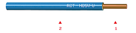
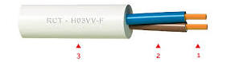
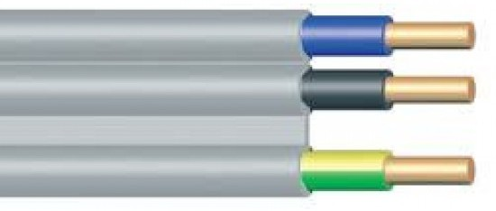
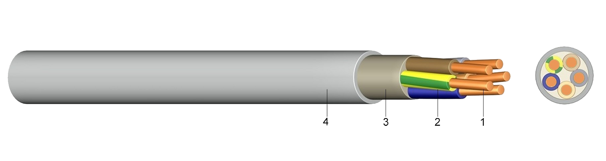

5. tétel: Villamos áramkörök
kialakításánál használt anyagok falon kívüli és
süllyesztett szerelési technológiák esetén
Mutassa be a villamos áramkörök kialakításánál
használható vezetékek, védőcsövek, vezetékcsatornák, dobozok, dugaszolóaljzatok,
elosztószekrények jellemzőit, amelyeket falon kívüli és süllyesztett villamos szerelések
esetén használhatunk! A tételhez használható segédeszköz: egy kisfeszültségű
vezeték műszaki adatlapja.
Kulcsszavak, fogalmak:
Kisfeszültségű vezetéktípusok
Vezetőanyagok, érszerkezetek
Méretsor
Védőcsövek anyagai
Falon kívüli és süllyesztett szerelési mód
Vezetékcsatorna típusok
Idomok
Méretek
Szerelvény- és elágazódobozok
Tömített szerelés anyagai
Dugaszolóaljzatok
Falon kívüli és süllyesztett kivitel
Egy- és háromfázisú aljzatok
Terhelhetőség szerinti méretsor
Kiselosztók
Moduláris villamos készülékekkel, áram-védőkapcsoló, kismegszakító, stb.,
szerelhető
N és PE csatlakozót tartalmaz
Az erősáramú hálózatban különféle típusú vezetékeket használnak.
Megnevezésük, jelölésük a napjainkban is folyamatban lévő szabvány harmonizáció következtében
változásokon ment át. Jó példa erre, a korábbi szakmai gyakorlatban használt vezeték
megnevezések –kiskábel, kábelszerű vezeték, tömlővezeték- eltűnése a szabványból. Ezeket a
vezetékeket ma összefoglaló néven köpenyes vezetékeknek nevezik.
Betűjelzés
Jelentés
M..
Műanyag szigetelésű vezeték
Mfs
Fény és saválló vezeték
MKh
Különösen hajlékony
MZSL
Lapos zsinorvezeték
MT
Műanyag tömlővezeték
MM fal
Falba helyezhető műanyag vezeték
M falra
Falra ragasztható műanyag vezeték
G...
Gumiszigetelésű vezeték
Gkh
Különösen hajlékony G vezeték
GT
Gumiszigetelésű tömlővezeték
GK és Gkh
Hegesztő vezeték
GF
Felvonó vezeték
GKI
Közvilágítási kábel
MB A1
Műanyag kábelszerű vezeték alumíniumvezetővel
Erősáramú vezetékek nemzetközi
betűjelzései
Típusjelzés
Harmonizált vezeték
H
Elismert nemzeti típus
A
Névleges feszültség
300/300 V
03
300/500
05
450/750
07
Szigetelőanyag
PVC
V
Természetes és sztirol-butadién gumi
R
Szilikongumi
S
Köpenyanyag
PVC
V
Természetes és sztirol-butadién gumi
R
Polikloropréngumi
N
Üvegszálfonat
J
Textilfonat
T
Különleges felépítés
Lapos felosztható vezeték
H
Lapos fel nem osztható vezeték
H2
Vezetékfajta
egyhuzalos
U
többhuzalos
R
Finomhuzalos, rögzített elhelyezésű
K
Finomhuzalos, rugalmas
F
Különlegesen finomhuzalos, rugalmas
H
Igen rugalmas zsinór
Y
Érszám
Védővezető
Védővezető nélkül
X
Védővezetővel (zöld-sárga)
G
Vezető névleges
keresztmetszete
Példák:
H07V-U

Tömör réz vezető
PVC szigetelés
(H) harmonizált
(07) 750V névleges feszültségű
(V) PVC érszigetelés
(U) tömör érszerkezet
(1,5) keresztmetszet (nincs a képen feltüntetve)
H03VV-F

Sodrott réz vezető
PVC szigetelés
Külső köpeny, PVC
(H) harmonizált
(03) 300V névleges feszültségű
(V) PVC érszigetelés
(V) PVC köpenyszigetelés
(F) Rugalmas érszerkezet
MM fal

Tömör réz vezető, PVC szigetelés és PVC
felsőköpeny.
Felhasználási terület:
Épületek erősáramú berendezéseihez vakolat alá védőcső nélküli rögzített beépítéssel.
MBCU

Réz vezető, tömör (RE) vagy sordott (RM)
PVC szigetelés
Érkitöltő
Külső köpeny, PVC
Fix telepítésre száraz, nedves és vizes
helyiségekben. Nem alkalmas kültéri használatra, vagy betonban.
A vezető lehet tömör huzal vagy sodrat, ill. a
sodrat huzalainak számától függően hajlékony sodrat,
különösen hajlékony sodrat, vagy extra hajlékony sodrat. A névleges keresztmetszetek: 0,5 0.75 1
1,5
2,5 4 10 16 25 35 50 70 95 120 150 185 240 300 400 mm2.
Védőcsőbe kell szerelni a vezetéket olyan helyeken, ahol egyrészt mechanikai behatásoktól kell
védeni
őket, ill. ahol előírás vagy kívánalom, hogy a vezetéket utólag cserélni lehessen. A műanyag
védőcsövek és szerelvényeik könnyen megmunkálhatók. a műanyag
védőcsövek kemény
PVC-ből készülnek. Lángba tartva a PVC ég, de az égést nem táplálja, a lángból kivéve lángja
elalszik
(önkioltó tulajdonságú). Kétféle kivitelben gyártják a felhasználásnak megfelelően. A MÜ I jelű
cső
vastag falú, a MÜ III jelű pedig vékony falú műanyag cső. A hajlékony műanyag védőcsövet
(gégecsövet) kettős könyökök, 90 foktól eltérő ívek készítésére, kisebb
mechanikai védelmet igénylő csatlakozásokra és csövezett panelekben a csomópontok összekötésére
használják.
A MÜ I jelű merev műanyag védőcső
A védőcső alapanyaga 2...3% lágyító tartalmú polivinilklorid. A merev
műanyag védőcső természetes
színe barna. A savaknak, lúgoknak, olajnak jól ellenáll. 20 °C körül szívós, 80 °C körül lágyul,
130-150 °C -on könnyen alakítható, 200 °C fölött bomlani kezd.
Falra, falba, födémbe, betonba, zsaluzatba fektethető. A betonaljzatban a mechanikai sérülés
elleni
védelmet a betonnak kell biztosítania.
Szerelhető:
száraz helyiségekben
poros, szennyezett helyiségekben
időszakosan nedves, párás, gőzős helyiségekben
meleg helyiségekben, de csak 60 °C környezeti hőmérsékletig
marópárás, marógőzős helyiségekben
"C" fokozatú tűzveszélyes helyiségekben
A védőcső legfontosabb méreteit az alábbi táblázat tartalmazza:
A védőcső típusjele és névleges
mérete
Legkisebb belső átmérő (mm)
Külső átmérő (mm)
MÜ I 11
15,4
18,4
MÜ I 13,5
17,2
20,4
MÜ I 16
19,1
22,5
MÜ I 21
24,5
28,3
MÜ I 29
32,8
37,0
MÜ I 36
42,4
47,0
MÜ I 42
48,8
54,0
A MÜ I jelű merev műanyag
védőcső tartozékai: A MÜ I védőcső toldásának
megkönnyítésére műanyag karmantyú készül, típusjele: MÜ I k. A karmantyú elcsúszásának
megakadályozására hosszának közepén hornyot készítenek. A 90°-os irányváltoztatásokat könnyíti
meg az
előregyártott műanyag könyökcső. A védőcsöveket a könyökcsővel karmantyúk segítségével kell
összekötni. A műanyag védőcsövekbe helyezett vezetékek kötéseit, leágazásait műanyag
dobozokban készítik, ezek könnyítik meg a vezeték behúzását is. A műanyag dobozok könnyű és
nehéz kivitelűek lehetnek. Tömítetlen szerelés esetén, száraz és időszakosan nedves helyiségben
használjuk könnyű kivitelű dobozt. Két méretben készül. Típusjele: MÜ dk. 100 és MÜ dk. 150. A
MÜ dk. 100 jelű doboz 21-es névleges méretű, a 150-es jelű doboz 36-os névleges méretű
védőcsövekhez használható. Méretlen vezetékek elágazásánál a doboz fedele ólomzárolható
(plombálható). A könnyű kivitelű dobozokat előre nem látják el furatokkal. A bevezetőgyűrűs
nehéz kivitelű műanyag elágazódobozok por- és páramentes helyeken falon kívüli szereléshez
alkalmasak. Kerek és szögletes formában készülnek. Típusjelük: MÜ dn. 80, MÜ dn. 100 és MÜ dn.
150. A kerek MÜ dn. 80 jelű doboz 16-os névleges méretű, a szögletes MÜ dn. 100 jelű doboz 21-es
névleges méretű és a MÜ dn. 150 jelű doboz 36-os névleges méretű cső csatlakoztatására alkalmas.
A dobozok 4 db puha műanyag bevezetőgyűrűvel készülnek. A szögletes nehéz kivitelű dobozokat
gyártják előre kihagyott lyukak nélkül is, így ezek alkalmasak egy oldalról több cső
csatlakoztatására is. A dobozok fedele szigetelő tömítőgyűrűvel és rögzítőcsavarral zárható.
MÜ III vékonyfalú műanyag védőcső: A
védőcső polivinilkloridból készül, 10...15% lágyítóval. A lágyító rugalmassá teszi a védőcsövet,
amely így hidegen (előmelegítés nélkül) is hajlítható. Alapvetően süllyesztett szereléshez
alkalmazható. Kedvező tulajdonsága a korlátlan élettartam, a jó szigetelőképesség, ellenállás a
vegyi hatásokkal szemben. A cső belső falának simasága folytán a vezetékbehúzás
könnyű. Szerelhető falon kívül is olyan helyen, ahol a védőcső mechanikai sérülésnek nincs
kitéve. Nem szerelhető falon kívül napsütésnek kitett helyen, továbbá fokozottan tűz- és
robbanásveszélyes helyeken. Nedves helyiségekben, falon kívül csak tömítve szerelhető, pl.
ragasztott kötésekkel. A dobozok felé lejtéssel kell szerelni. A cső tényleges belső átmérője
megegyezik a névleges mérettel, gyártási hossza 2,5 - 3 m.
A védőcső típusjele és névleges
mérete
Legkisebb belső átmérő (mm)
Külső átmérő (mm)
MÜ III 11
11,0
11,1
MÜ III 13,5
13,5
14,6
MÜ III 16
16,0
17,2
MÜ III 23
23,0
24,4
MÜ III 29
29,0
30,8
MÜ III 36
36,0
38,2
MÜ III 48
48,0
50,6
A MÜ III védőcső
tartozékai: A védőcső
toldását megkönnyíti az előregyártott műanyag karmantyú. Típusjele: MÜ III k. Könyökcső
alkalmazható a 23...36--os irányváltoztatásainál (a 11...16-os csöveket hidegen lehet
hajlítani). Típusjele: MÜ III kö. Falon kívüli szerelésnél a MÜ I védőcsőnél ismertetett dobozok
alkalmazhatók. Süllyesztett szerelés esetén használatos doboz három méretben
készül. A MÜ ds. 65 típusú doboz 16 mm-es csőméretig használható, és fedél nélkül süllyesztett
szerelvények (kapcsolók, dugaszolóaljzatok) elhelyezésére is. A MÜ ds. 80 típusú dobozba 23 mm
átmérőig vezethetők be a védőcsövek. A MÜ dsl. 80 típusú doboz lapos kivitelű, használható 16 mm
csőátmérőig és főleg MM fal típusú vezetékek szereléséhez. A dobozok fala a védőcsövek
csatlakozása
részére elvékonyított és könnyen kitörhető. A dobozok fedele rányomással rögzíthető.
VILÁGÍTÁSI ÉS VILLAMOS ENERGIA ELOSZTÓ HÁLÓZATOK MEGOLDÁSAI
A vezetékek elhelyezési módja befolyásolja terhelhetőségüket. A létesítési
szabvány alap preferenciákat tartalmaz a szabványos elhelyezésekre vonatkozóan. Annak érdekében,
hogy megállapíthatóak legyenek az egyes elhelyezési kódok, és a hozzájuk tartozó módosítási
tényező számértékei, röviden meg kell ismerni a kivitelezési lehetőségeket.
Védőcsővel történő szerelés A műanyagból
készített védőcsöveket a villamos szereléseknél alkalmazott vezetékek rendezett elhelyezésére
használják. Védőcsőbe szerelik a vezetéket olyan helyeken, ahol a mechanikai behatásoktól kell
védeni őket, illetve ahol a vezeték utólagos cseréjének lehetősége felmerül. A védőcső kör
keresztmetszetű, zárt szelvényű a kialakítással készül. A műanyag védőcső lehet vékony-, vagy
vastag fallal gyártott, merev vagy hajlékony kivitelű. A merev vékony falú típust vakolat alatti
szerelésekben használják. A merev vastag falú kivitelt falon kívüli szereléseknél alkalmazzák. A
hajlékony (gégecső) védőcső is lehet könnyű vagy lépésálló kivitelű. Mechanikai és villamos
tulajdonságai kielégítik a védőcsőre vonatkozó szabványelőírásokat, ezért fajtájától függően a
gégecsövek ugyanúgy felhasználhatóak, mint a merev védőcsövek. Segítségével könnyen szerelhető a
nyomvonal irányának megváltozása. Leágazások készítésénél, nyomvonal irányának megváltozásánál
felhasználhatók az előre gyártott védőcső elemek, de helyszíni szereléssel is megoldható a
feladat. A védőcsövekbe húzható vezetékek számát a behúzni kívánt vezetékek fizikai mérete,
és terhelése határozza meg. A védőcsőben az egymást melegítő vezetékek terhelhetősége csökken,
ezért kötött a behúzható vezetékek száma.
Szerelés vékonyfalú védőcsővel Az
alkalmazott védőcsövek közül a vékonyfalú védőcsőnek van a legkisebb ellenállása a mechanikai
hatásokkal szemben, ezért olyan helyeken alkalmazzák, ahol egyéb járulékos védelme (pl.
horonyba, álmennyezet fölé, burkolati borítások mögött vezetve) is megoldható. A védőcső
szerelés megkezdése előtt az első feladat a dobozhelyek és a nyomvonal kijelölése a kiviteli
terv szerint. A védőcsövek csak vízszintesen és függőlegesen fektethetők, a nyomvonal
kialakításánál a legrövidebb megoldást kell választani. A szerelvénydobozok magassága
általában a padlószint fölött 1,4 m magasságban található, dugaszolóaljzatok lakásban és
irodákban padlószint fölött 0,4 m magasságban is elhelyezhetők. Mennyezetet megvésni csak akkor
szabad, ha a terv egyértelműen előírja, illetve statikustól előzetes engedéllyel rendelkezünk.
Oldalfalakban a hosszú vízszintes védőcső szakaszokat a dobozok felé 2-2 cm-es eséssel kell
fektetni, amelyre vésés előtt, a nyomvonal kijelölésekor gondolni kell. A leágazó dobozok
takarékos kiosztása és jó elhelyezése - a kisebb kötésszám miatt - csökkenti a hibahelyek
számát. A szerelés minél rejtettebb legyen, vagyis kevés dobozfedél legyen látható.
A leágazó dobozok helye mennyezettől kb. 0,3 m, mindenhol azonos magasságban. A tervezett
áramköri vezetékeknek megfelelően kell a dobozok méretét és a számát meghatározni. Egy dobozba
több védőcső csatlakozhat átmenő jelleggel, amelyekbe másmás áramköri vezetékek is húzhatók, de
dobozonként csak egy áramköri vezetéken készíthető kötés. A védőcső méretét a feladathoz
szükséges vezetékek száma és keresztmetszete alapján, míg a leágazó dobozok méretét a várható
kötésszám szerint választják meg. A két doboz közötti egyenes csőszakasz
legnagyobb hossza 12 m lehet. Egy 90° -os ív beépítésével a két doboz közötti csőszakasz 9 m,
két 90°-os ív beépítésével legfeljebb 6 m lehet.
Szerelés vastag falú védőcsővel A vastag
falú védőcsövek mechanikai szilárdsága elegendő a falon kívüli szerelések esetén a vezetékek
védelmére. A helyiség rendeltetésének megfelelő esztétikai igény kielégítésére is gondolni kell.
Ezért a tervek gondos tanulmányozását követheti a nyomvonal kijelölése. Az átfutó-, leágazó-,
csatlakozódobozok pontos helyét, méretét a kijelöléssel egy időben a nyomvonalterven is jelölni
kell. Csak vízszintes és függőleges vonalvezetés választható, hőt kibocsátó, sugárzó
berendezések közelségét kerülni kell. Az átfutó dobozok méretének megválasztásában a
csatlakoztatható védőcsövek mennyisége a meghatározó, mert a dobozon átvezethető megszakítás
nélkül több áramköri vezeték is. Átfutó dobozt használhatunk leágazó dobozként is, de az átmenő
vezetékek közül csak az egy áramkörhöz tartozó vezetékekről készíthető leágazás. A vastag
falú védőcsövekhez olyan kivitelű dobozokat gyártanak, amelyek szilárdsága azonos a védőcső
szilárdságával. Átfutó dobozokat egyenes szakaszokon 12 m-ként, egy irányváltoztatásnál 9
m-ként, két könyökcső beépítése esetén 6 m-ként kell elhelyezni. Két doboz közötti szakaszba két
90o -os ívnél több nem építhető be Az előre gyártott íveken kívül más ívek beépítésére is
szükség lehet, és a védőcsövek
toldását akkor is el kell végezni, ha nincs gyári karmantyú. A védőcsövek melegítés után
felbővíthetők, hajlíthatók. Szükség esetén fűrésszel darabolható, rá menet vágható.
Műanyag vezetékcsatorna A műanyagból
készült vezetékcsatorna négyzet, vagy téglalap keresztmetszetű. Anyaga nehezen égő (önkioldó)
polivinilklorid (kemény PVC). A vezetékcsatorna alsó részből és fedél részből áll. Ezek
összekapcsolását a részek megfelelő kialakítása, valamint az anyag rugalmassága teszi lehetővé.
A műanyag vezetékcsatorna gyakorlatilag a védőcső szerepét tölti be. Ott érdemes alkalmazni,
ahol a falon kívüli szerelés előnyös. Perforálással készült fajtáját elosztószekrények
huzalozásához használják, a réseken keresztül a vezeték kivezetése egyszerű. A
vezetékcsatorna nyomvonalát úgy kell meghatározni, hogy minél kisebb mértékben legyen kitéve
mechanikai sérülésnek. A függőleges szakaszok vezetése lehetőleg sarkok közelében, vagy az ajtó-
és ablaktok mellett célszerű. A vízszintes vezetékcsatorna-szakaszokat többféle módon lehet
szerelni. Ha a padlószegélyre kerül a vezetékcsatorna, s rá vagy közvetlenül mellé a
dugaszolóaljzatok. Az ilyen vonalvezetés az ajtók megkerülésével jár. A felső
nyomvonalvezetés jelenti a másik megoldási lehetőséget. Közvetlenül az oldalfal és a mennyezet
találkozásához kerül a vezetékcsatorna, vagy a mennyezet szintjétől 25...30 cm-re lejjebb a
falra. Könnyűszerkezetes épületek esetében a mennyezet és az oldalfal lekerekítés nélküli,
pontos illesztéssel csatlakozik, az itt elhelyezett csatorna betöltheti a takaróléc szerepét is.
A hagyományos épületekben lekerekített vagy letört fal- és födémsík találkozást készítenek,
tehát a csatornát alacsonyabban kell elhelyezni. A szerelvények elhelyezésére a hagyományos
technológiáknál alkalmazott elvek érvényesek. A nyomvonalak kijelölésekor a helyiség
rendeltetését is figyelembe kell venni a veszély kockázatát mérlegelve: a vezetékcsatornák
kézzel elérhető magasságba kerülhetnek-e? A vezetékcsatornát járulékos hő elleni védelemmel kell
ellátni azokon a szakaszokon, ahol fűtési csövet keresztez, vagy más hősugárzó tárgyat közelít
meg.
Műanyag köpenyes vezetékkel történő
szerelés A köpenyes vezeték szerelése fogalomkörbe hagyományosan a kábelszerű
vezetékek és tömlővezetékek szerelését értjük. A köpenyes vezetékek szerelésének első
szakaszában a kábel nyomvonalát határozzák meg. A nyomvonal megválasztásánál ügyelni kell arra,
hogy a vezeték mechanikailag védett helyen, lehetőleg vízszintes és függőleges irányban
haladjon. Kerülni kell a felesleges irányváltoztatásokat és kereszteződéseket. Az oldalfalakon a
2,5 m-nél alacsonyabban haladó kiskábeleket, ha mechanikai sérülés veszélye áll fenn, járulékos
védelemmel kell ellátni. Az épületek külső falán (oldalán) a nyomvonalat úgy kell kijelölni,
hogy napsugárzástól védett helyen, lehetőleg a tetőeresz alatt vezessék. Ha ez nem
lehetséges, akkor a napfénynek kitett helyeken szilikon szigetelésű köpenyes vezetékkel
szereljenek. A nyomvonalterv ismeretében meghatározzák az elosztó berendezések, elágazó dobozok,
lámpatestek, kapcsolók, dugaszolóaljzatok és egyéb végleges bekötésű berendezések helyét. A
csomópontok helyzete egyértelműen meghatározza a kábelszerű vezetékek szerelési magasságát. A
tartószerkezet típusának kiválasztásánál a külső megjelenés is követelmény. Beépítésétől nagy
pontosságot kívánnak meg a falon kívüli szereléseknél. Gyakori, hogy egymás mellett igen
nagyszámú kábelszerű vezetéket kell elhelyezni, és így a sok rögzítő bilincs miatt túl nagy
tartószerkezetre lenne szükség. Lényegesen kisebb a hely és az időszükséglet, ha beépített
perforált tartószerkezetet alkalmaznak. A köpenyes vezetékeket a szükséges sorrendben a
tartószerkezet és a leszorító lapos acél (perforált acél szalag) közé illesztik. A szerelés
során ügyelnek a közel azonos átmérőjű kábelek egymás melletti elhelyezésére. A vezeték
nyomvonallal a gépészeti berendezéseket úgy kell elkerülni, hogy azok javítása esetén ne legyen
szükség a köpenyes vezeték eltávolítására. Mechanikai sérülésnek kitett helyeken a kábelszerű
vezetékek járulékos védelméről gondoskodni kell.
Szerelés létrára, kábeltálcára Vízszintes
nyomvonalszakaszon a köpenyes vezetékek terített, rögzítés nélküli szerelése történhet, szorosan
egymás mellé helyezett kábelszerű vezetékekkel. Ugyanazon a kábellétrán földkábelek is
elhelyezhetők köpenyes vezetékek mellett. Létrákon, kábeltálcákon a kábelszerű vezetékek
rögzítési távolsága 40cm.
Padlócsatornák A vezetékcsatorna
elhelyezhető a födémben is a födémszerkezettől függően, az építészeti előírások betartásával.
Akkor szükséges ez a megoldás, ha a falon kívüli csatornarendszerrel már nem lehet a
villamosenergia-ellátási és az informatikai, híradástechnikai igényeket kielégíteni, pl. nagy
terű irodahelyiségekben, műhelyekben. Számításba jöhet akkor is, ha egy felső (mennyezet alatti)
csatornarendszer befüggesztett csatlakozásai bármely oknál fogva (térhatás, esztétikum,
munkavégzés) nem kívánatosak. A padlócsatornák acélból és műanyagból készülhetnek, 4...6 m
hosszban, előregyártott, egy vagy több rekeszes kivitelben. A több rekeszesek főleg az erősáramú
és az informatikai berendezések vezetékeinek elkülönítésére, szétválasztására szolgálhatnak. A
padlócsatornák leágazó dobozaiban a szerelvényeket a többi szerelvénytől függetlenül is lehet
javítani,
szerelni, ill. cserélni. A vezetékcsatorna-rendszereket célszerű úgy méretezni, hogy azok
legfeljebb 50%-ig legyenek kihasználva, így az utólagos bővítés, módosítás problémamentesen
megoldható. A födém felső rétegébe helyezhető padlócsatornát többnyire levehető fedéllel
készítik, amelyet szőnyegpadló vagy a fedéllel kombinált parketta takar.
Síncsatornás szerelés Villamosenergia
elosztás síncsatornák segítségével is megvalósítható a betápláló transzformátortól a
végfogyasztóig. Előre gyártott, tipizált elemekből állítható össze az ellátást biztosító
hálózat. Világítási áramkörök is kialakíthatók síncsatornákkal, egy vagy két áramkör számára.
Merev, nagy szilárdságú csatornákra közvetlenül felszerelhetők (felfüggeszthetők) a lámpatestek.
Ilyen alkalmazásokkal ipari létesítményekben, áruházakban reflektorok, gázkisüléses lámpák
alkalmazása során találkozhatunk. Másik megoldásban a lámpatesteket az épület szerkezetéhez
erősítik, hajlékony csatornával biztosítják a villamos energiát (irodák, üzletek, álmennyezetes
kivitelezések) egy áramkör számára. A tokozott szerkezetek IP védettségi kódjának
meghatározásakor a szilárd részecskék, a por, a víz bejutása elleni védelemre is gondolni kell.
Egyúttal a személyek védelmét is biztosítani tudják az aktív részekhez történő hozzáférés
megakadályozásával.